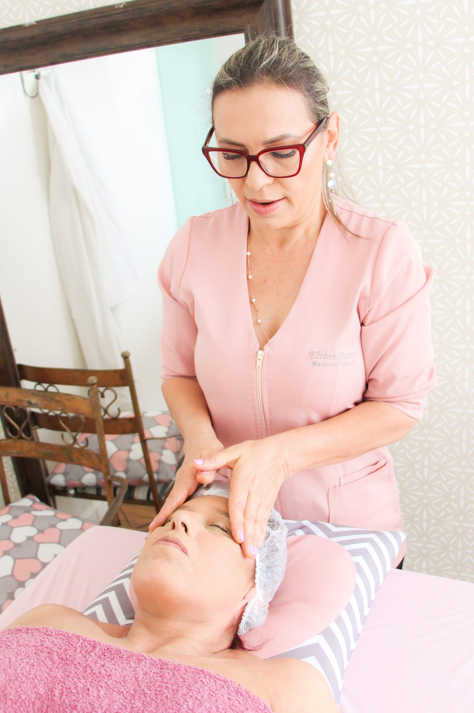

Cuidado que o corpo sente. Bem-estar que você leva.
Massoterapia com atendimento individualizado, experiência e acolhimento para aliviar tensões, promover relaxamento e cuidar do seu bem-estar.
.jpg)
Um cuidado para cada necessidade.
Massagem Terapêutica
Atendimento direcionado a tensões e desconfortos musculares, respeitando as necessidades de cada pessoa.
Saiba mais →Massagem Relaxante
Uma pausa para desacelerar, aliviar a tensão do dia a dia e proporcionar sensação de bem-estar.
Saiba mais →Drenagem Linfática
Técnica manual voltada ao cuidado corporal e ao estímulo da circulação linfática.
Saiba mais →Massagem para Terceira Idade
Cuidado adaptado, delicado e individualizado para promover conforto e bem-estar.
Saiba mais →Massagem Estética
Técnicas corporais integradas aos objetivos estéticos e ao cuidado com o corpo.
Saiba mais →Massoterapia
Combinação de técnicas escolhidas de acordo com a avaliação e a necessidade de cada atendimento.
Saiba mais →
Experiência, técnica e um olhar individual para cada pessoa.
Há 34 anos, Eliane Ramos dedica sua trajetória profissional ao cuidado com o corpo e ao bem-estar. É graduada em Massoterapia e certificada pela TopCorpus.
Seu espaço, no bairro Tristeza, foi pensado para oferecer um atendimento acolhedor, confortável e individualizado.
“Cada atendimento começa ouvindo o que o seu corpo precisa.”
Técnicas manuais e tecnologia em um cuidado personalizado.
Radiofrequência
Recurso utilizado em protocolos estéticos individualizados, conforme avaliação profissional.
Saiba mais →Ultracavitação
Tecnologia que pode integrar protocolos corporais conforme avaliação profissional.
Saiba mais →Eletrolipoforese
Recurso complementar dentro de tratamentos estéticos personalizados.
Saiba mais →Corrente Russa
Tecnologia aplicada em protocolos de cuidado e estética corporal, conforme avaliação.
Saiba mais →Tratamentos combinados
Massagem e aparelhos podem ser associados conforme objetivos e avaliação individual.
Avaliação individual
A indicação de técnicas e recursos é definida de acordo com cada necessidade.
Quem conhece, recomenda.
mais de 100 avaliações
“Profissional extremamente competente, sempre buscando o melhor tratamento para cada necessidade.”
Ana RoldãoAvaliação no Google“Profissional extremamente delicada, dedicada e sempre buscando o melhor atendimento.”
Cris PerroniAvaliação no Google“Excelente massoterapeuta, cheia de recursos e muito sensível!”
Karina KonigAvaliação no GoogleSeu corpo também merece uma pausa.
Rua Dr. Armando Barbedo, 480 – Sala 402
Tristeza • Porto Alegre/RS • CEP 91920-520
Segunda a sexta • 08:00 às 19:00
(51) 99635-5146